INGREDIENTS
BATTER
- 4 egg yolks
- 8 fl oz ube puree (or ube halaya)
- 4 fl oz coconut cream
- 1 tsp ube extract
- 100 g white granulated sugar
- 2 g salt
- 4 fl oz carbonated water
- 260 g cake flour
- 10 g baking powder
MERINGUE
- 4 g cream of tartar
- 10 egg whites
- 100 g white granulated sugar
WATER BATH
FROSTING AND ASSEMBLY
- 567 g unsalted butter softened and room temperature
- 550 g powdered sugar sifted
- 2 fl oz coconut cream
- ube extract (optional)
- 3 fl oz macapuno coconut string jam
EQUIPMENT USED
- stand mixer, hand mixer, or whisk
- 8 x 3 inch cake pans
- spatula
- cooling rack
- sheet pan
- parchment paper
INSTRUCTIONS
BATTER
- Preheat oven to 350 °F
- Cut out parchment paper to line each cake pan.
- In a mixing bowl, whisk together the egg yolks, ube puree, coconut cream, and ube extract. Pour the sugar and salt and whisk until they dissolve.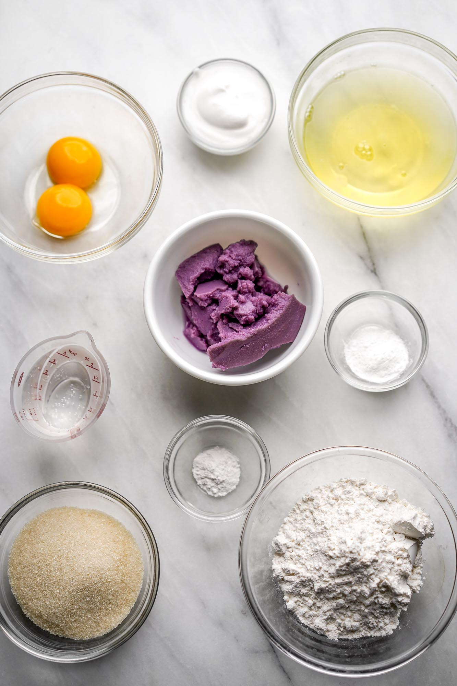
- Carefully pour in the carbonated water and whisk until incorporated.
- Sift the cake flour and baking powder into the mixing bowl with the liquid. Whisk together until there are no lumps.
MERINGUE
- In a stand mixer, add the cream of tartar and all the egg whites. Turn on to your stand mixer to level 8 for about 2 minutes. Add half of the sugar and continue to beat for another one minute, then add the rest of the sugar.
- Continue to beat the egg whites for about 5-7 minutes total or until you have stiff peaks. You can test this by turning off your stand mixer, unhooking the whisk attachment, and turning it upside down to see if the peaks keep their shape.
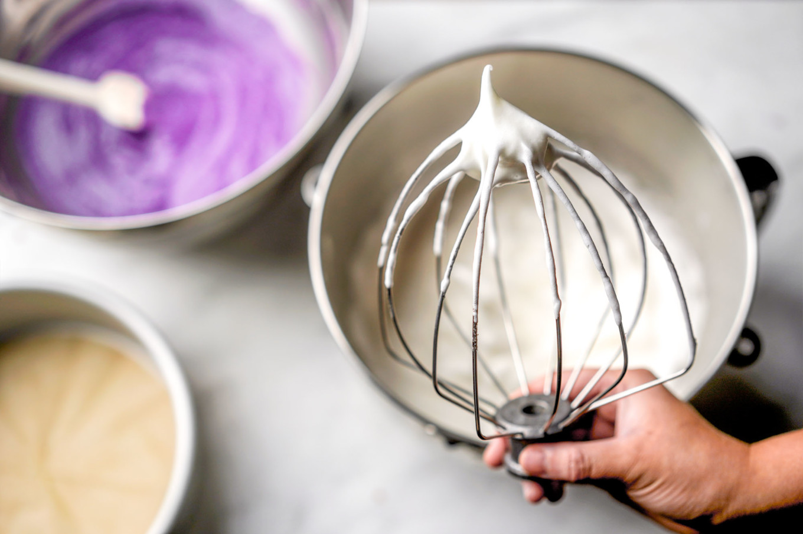
BAKING
- Using a spatula, take about ¼ of the meringue and add it into the cake batter. Use a whisk to dilute the thickness of the cake batter with the meringue until it’s completely incorporated.
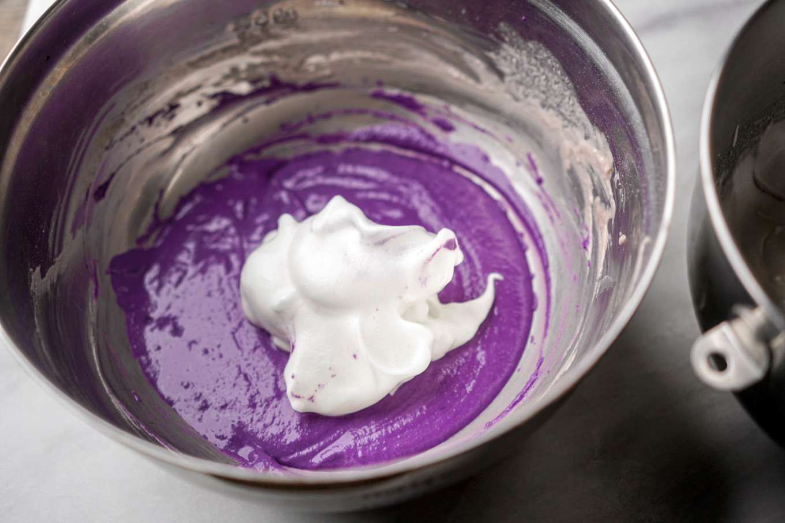
- Then use the spatula to add the rest of the meringue into the diluted batter. Use a very soft folding method to combine the meringue and batter by holding your spatula like a knife, slicing it down the middle of the bowl, and folding the batter over the left side of the bowl (or right side if you are left-handed).
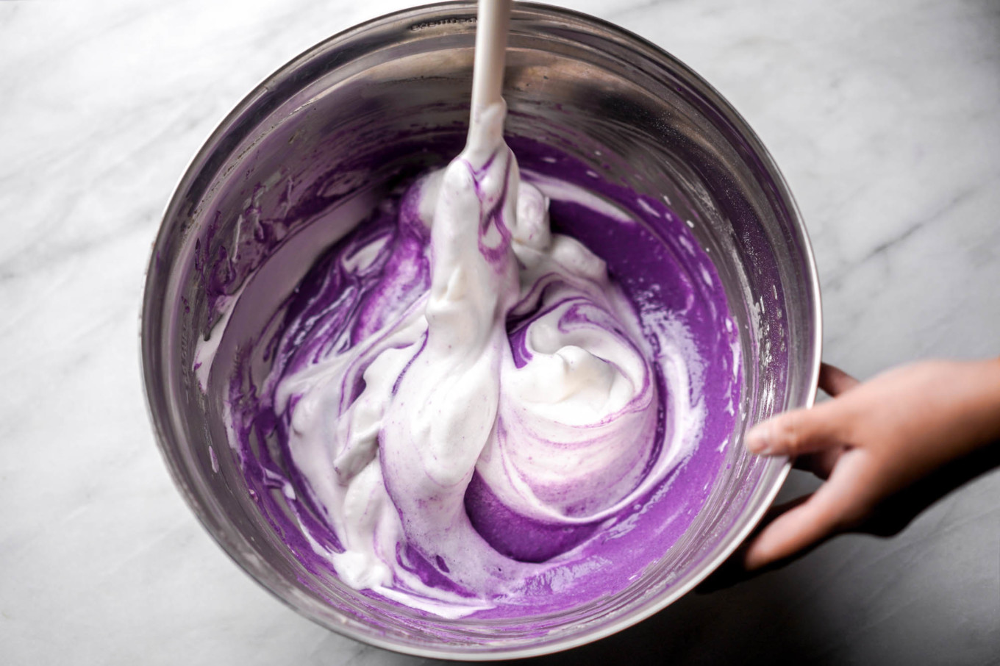
- Keep rotating the bowl slightly before each fold until your meringue and cake batter are combined. Here's how the final batter texture should look.
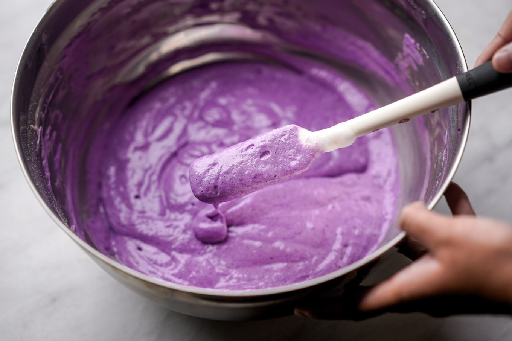
- Divide batter between the two pans, then slightly tap them on the counter to remove any excess bubbles. Place your cake pans on a large sheet pan and place them on the middle rack of your oven. Pour boiling water in the sheet pan for the water bath or “bain marie” and stop at about ½ inch from the bottom of the pan. Check on the water levels for the bain marie every 15 minutes.
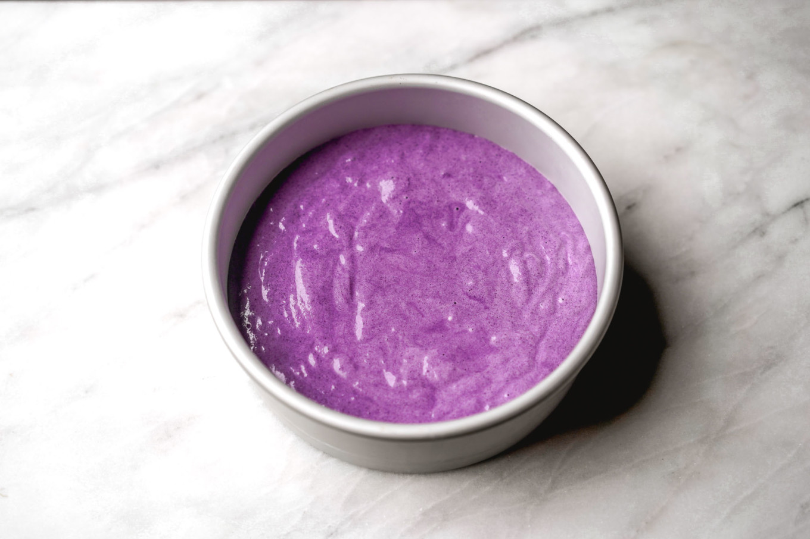
- Bake the cake for approximately 30-45 minutes or until it’s firm in the center. After 30 minutes, test the cake with a toothpick or cake tester by poking it in the middle. The toothpick should come out smoothly and clean—if it doesn’t, keep baking and testing every few 5 minutes until it does.
- Remove the cakes and immediately turn them upside down on top of a wire rack without releasing them from the pan. Leave on the counter until they are cool to the touch. Cooling upside prevents the cake from deflating.
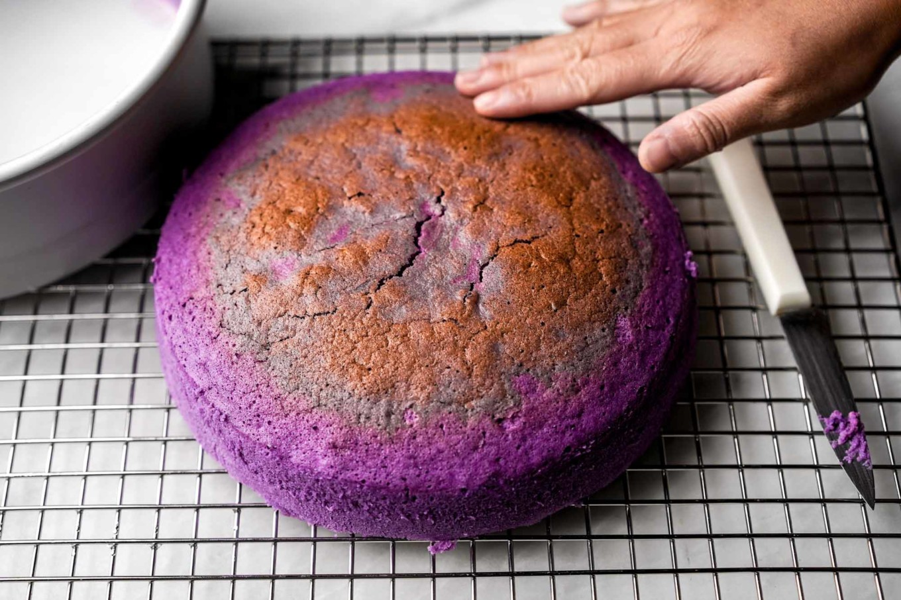
FROSTING
- In a stand mixer, add the softened butter and whip on level 8 for about 5 minutes or until it turns into a light and airy texture. Make sure to scrape down the sides every so often to make sure all the butter gets aerated.
- Lower the level to 6. Sift the powdered sugar and add half the sugar into the stand mixer. Whisk for two minutes. Scrape the sides if necessary.
- Add the other half of the sugar and whisk for another two minutes to make sure all of the sugar is incorporated. Scrape the sides if necessary.
- Add the coconut cream and increase to level 8. Whisk for one last minute.
- You have the option of adding ube extract to the frosting at this point. I chose an ombre icing design so I added a varied amount of extract for a darker purple and a light violet icing.
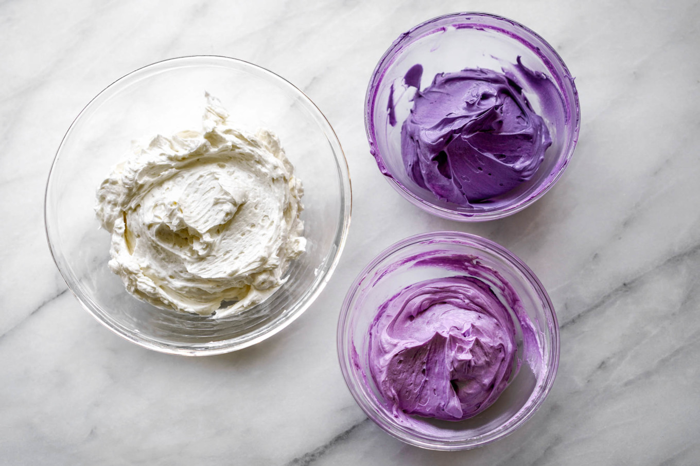
ASSEMBLY
- Run a knife along the sides of the cake to release the cake from the pans. Remove the parchment paper from the bottom of each cake, and place them back onto the rack.
- Place one cake on a plate (or cake stand) and add some of the frosting on the top.
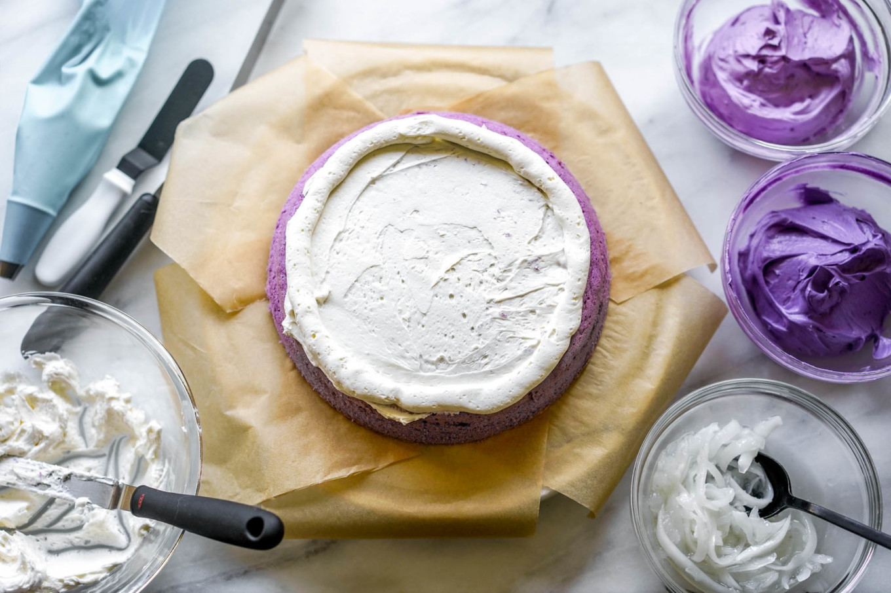
- Spoon the macapuno on top of the frosting and add the top layer of cake.
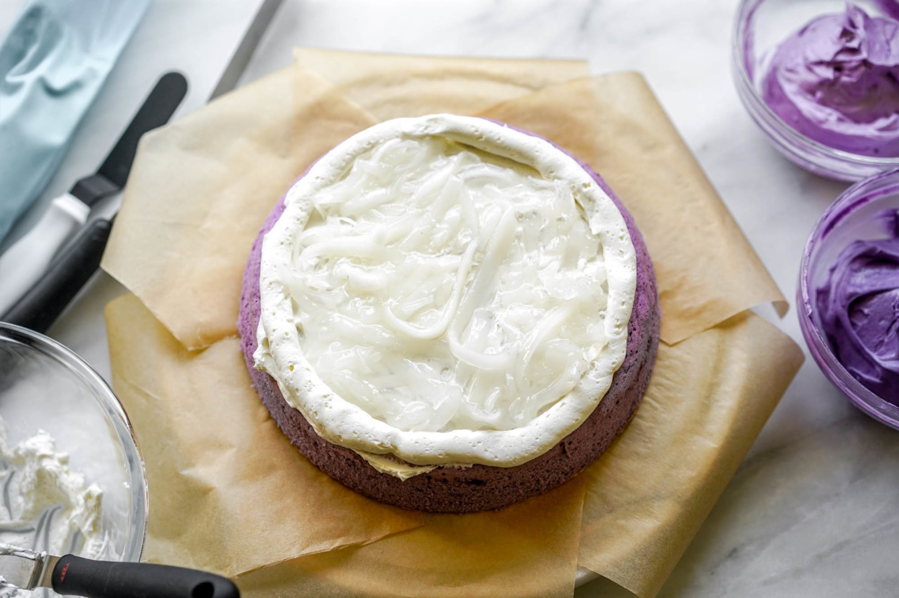
- Add the 2nd layer of cake on top and if necessary, trim your cakes so they match in size and so it's flat on top.
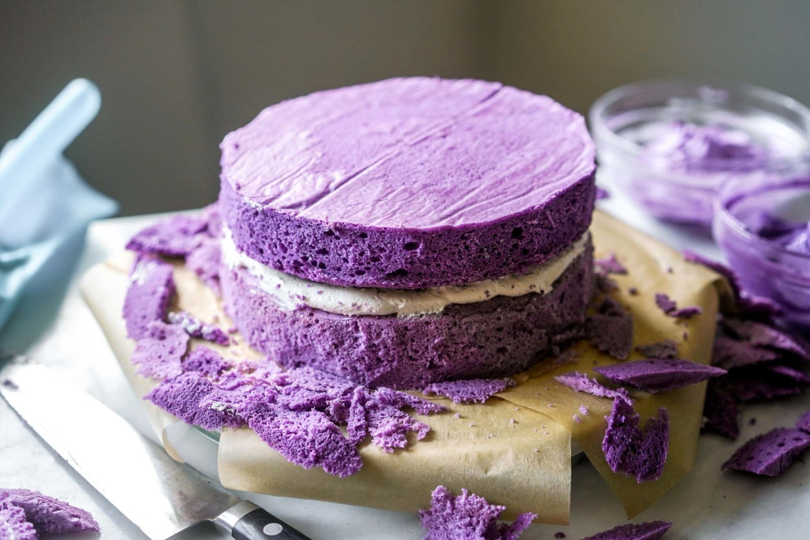
- Frost the cake with the leftover frosting.
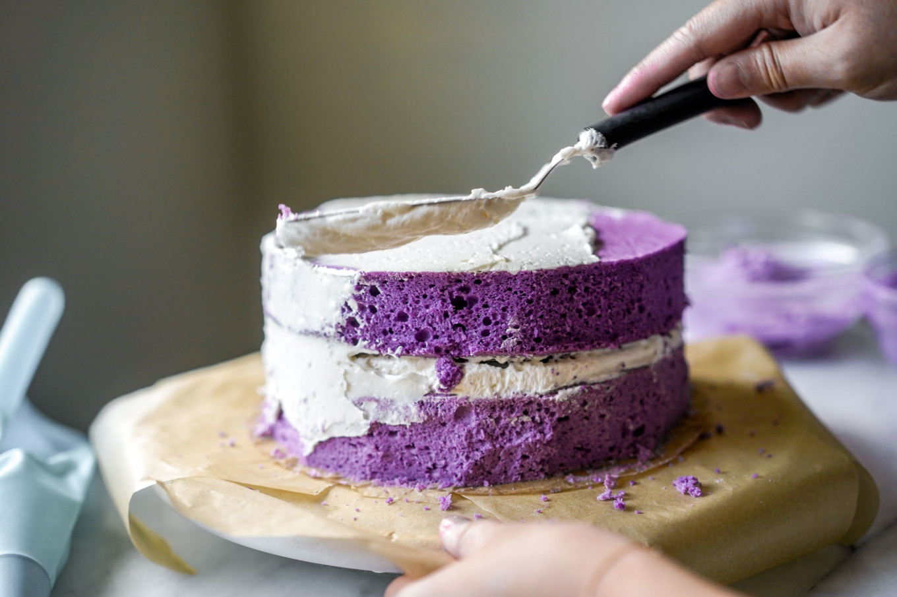
- Serve immediately or allow to chill in the fridge until it’s time to serve.
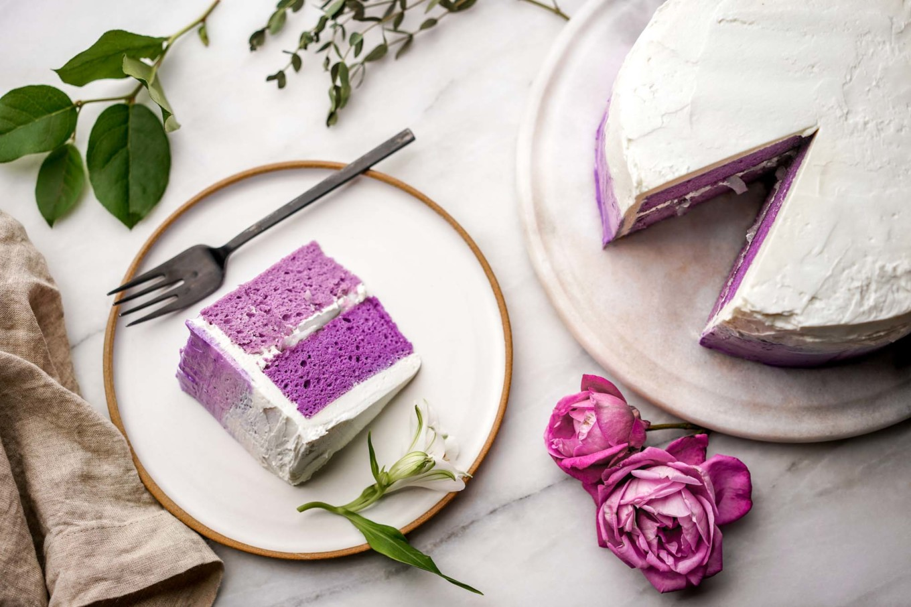